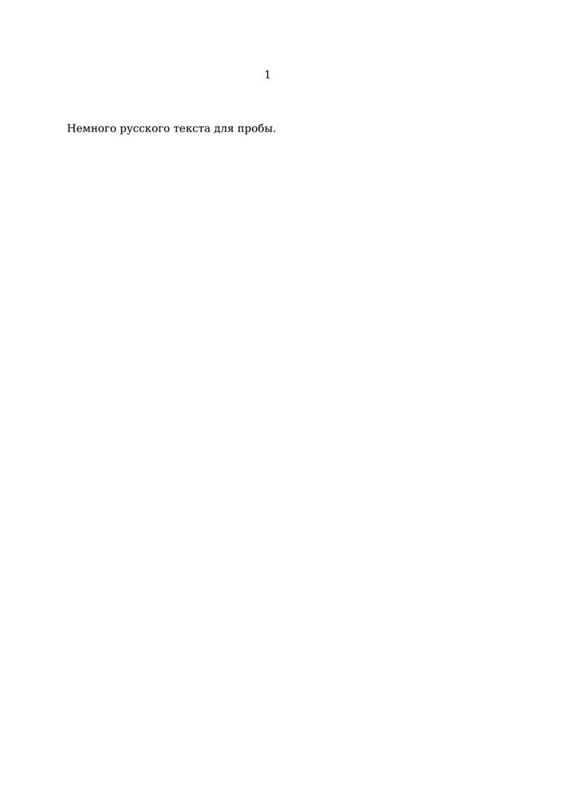

To use Russian in ConTeXt MkIV, you need a font that has cyrillic letters, e.g. the DejaVu fonts which are shipped with the ConTeXt Standalone.
-
\setupbodyfont[dejavu] \mainlanguage[russian] \starttext Немного русского текста для пробы. \stoptext
- 
For more details on how to change fonts in ConTeXt, see Characters words and fonts/Fonts in LuaTeX